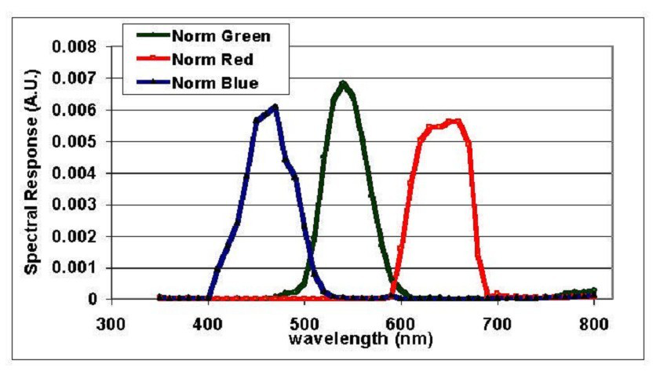
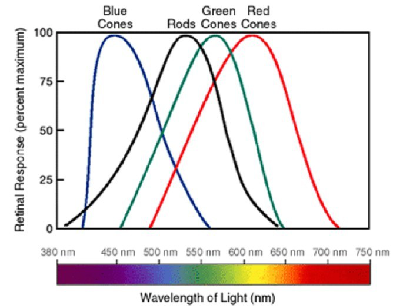
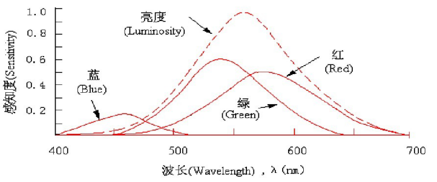
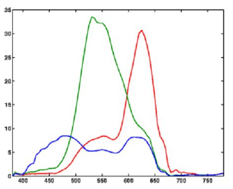
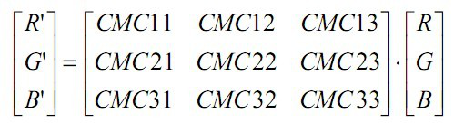
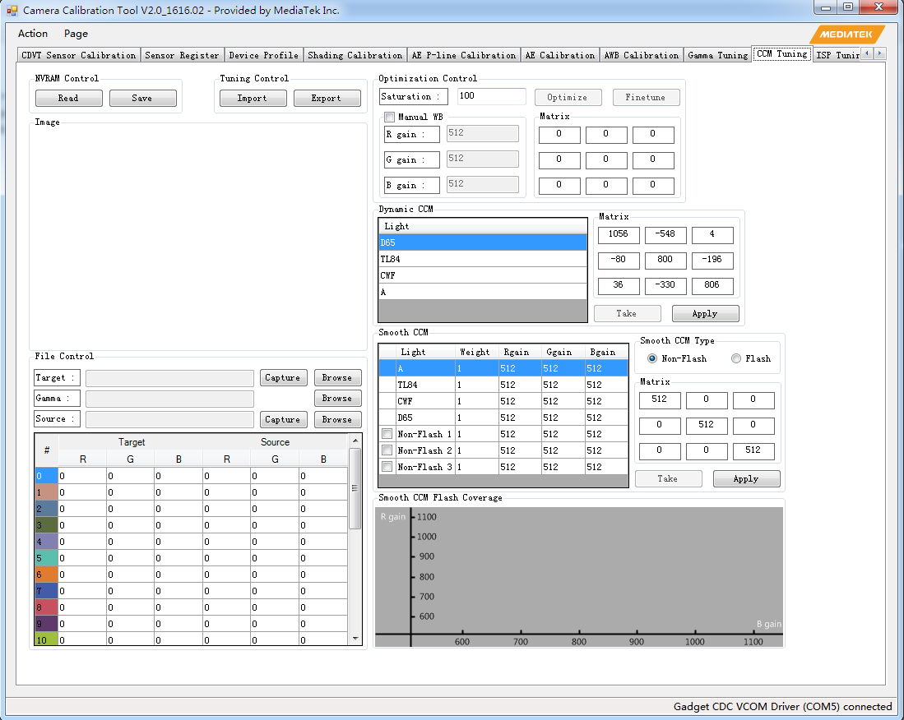

Camera概念篇-色彩校正矩阵
Color Correction Matrix简称CCM，意为色彩校正矩阵，用来校正人眼和Sensor对色彩的响应的差异。
概念
人眼对色彩的识别，是基于人眼对光谱存在三种不同的感应单元，不同的感应单元对不同波段的光有不同的响应曲线的原理，通过大脑的合成得到色彩的感知。一般来说，我们可以通俗的用RGB三基色的概念来理解颜色的分解和合成。
理论上，如果人眼和 sensor对光谱的色光的响应，在光谱上的体现如下的话，基本上对三色光的响应，相互之间不会发生影响，没有所谓的交叉效应。
RGB理想响应:

但是，实际情况并没有如此理想，下图表示了人眼的三色感应系统对光谱的响应情况。可见RGB的响应并不是完全独立的。
RGB真实响应:


下图则表示了Kodak某相机光谱的响应。可见其与人眼的响应曲线有较大的区别。

既然我们已经看到 sensor 对光谱的响应，在 RGB各分量上与人眼对光谱的响应通常是有偏差的，当然就需要对其进行校正。不光是在交叉效应上，同样对色彩各分量的响应强度也需要校正。通常的做法是通过一个色彩校正矩阵（Color Correction Matrix）对颜色进行一次校正。

该色彩校正的运算通常由 ISP 完成，软件通过修改相关寄存器得到正确的校正结果。值得注意的一点是，由于 RGB -> YUV的转换也是通过一个 3*3 的变换矩阵来实现的，所以有时候这两个矩阵在 ISP 处理的过程中会合并在一起， 通过一次矩阵运算操作完成色彩的校正和颜色空间的转换。
MTK CCM
MTK方案中在前期客观调试时需要通过CCT在各色温光源下进行校准，CCT中CCM界面如下：
